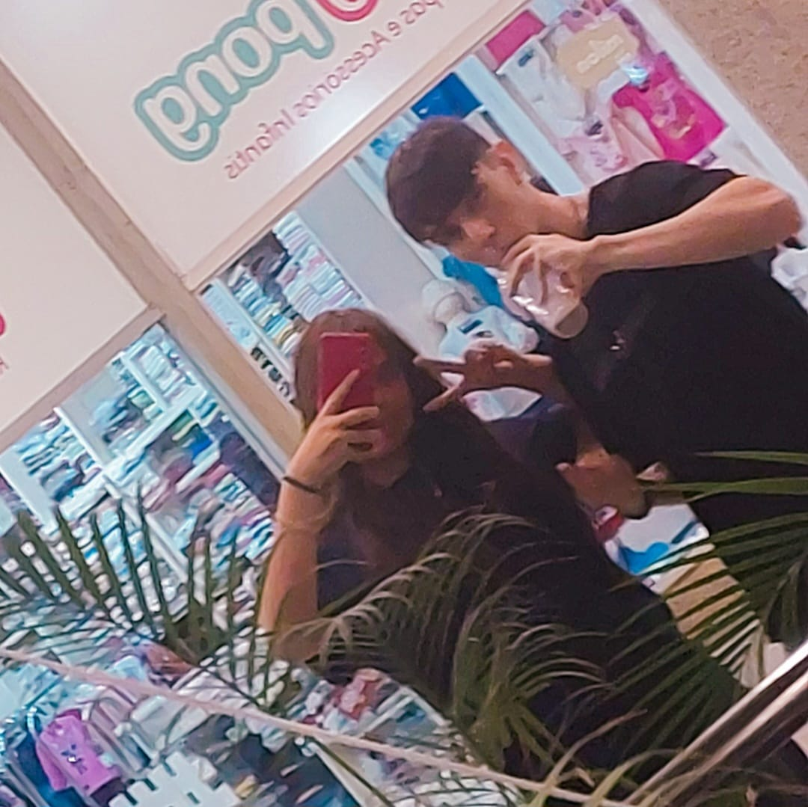
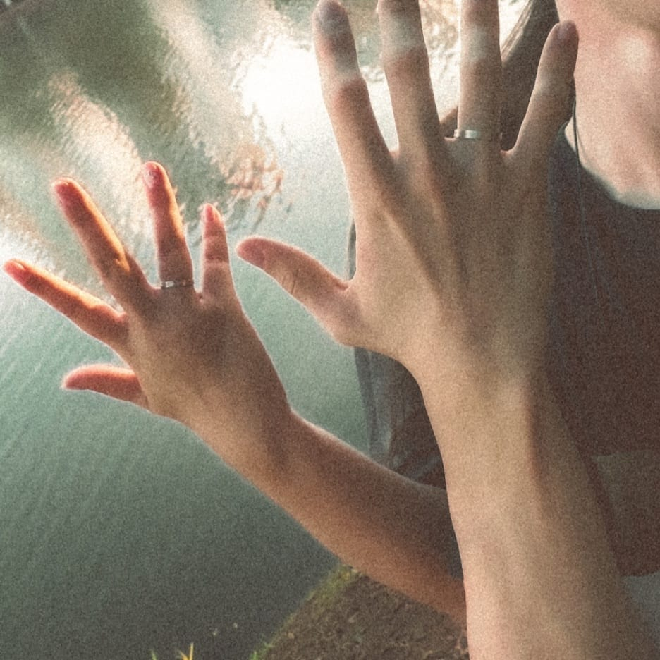
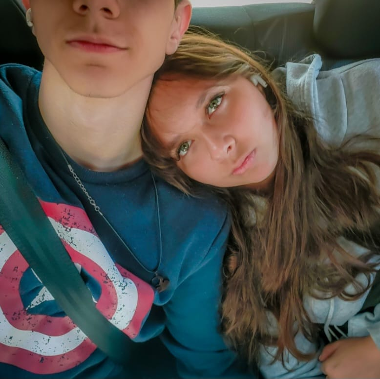
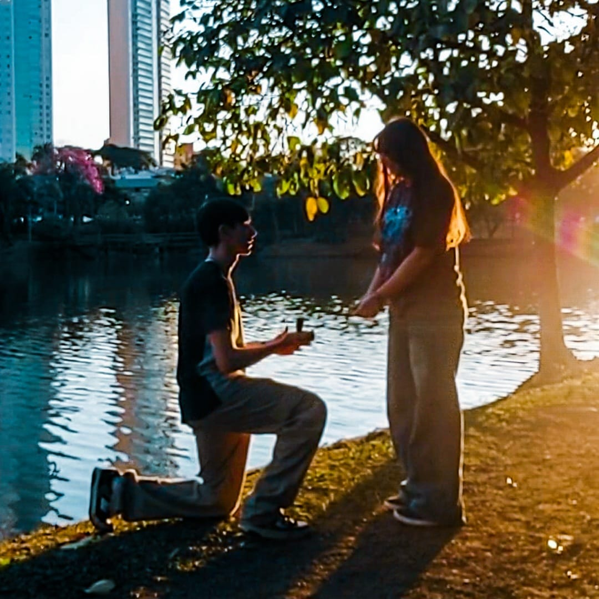
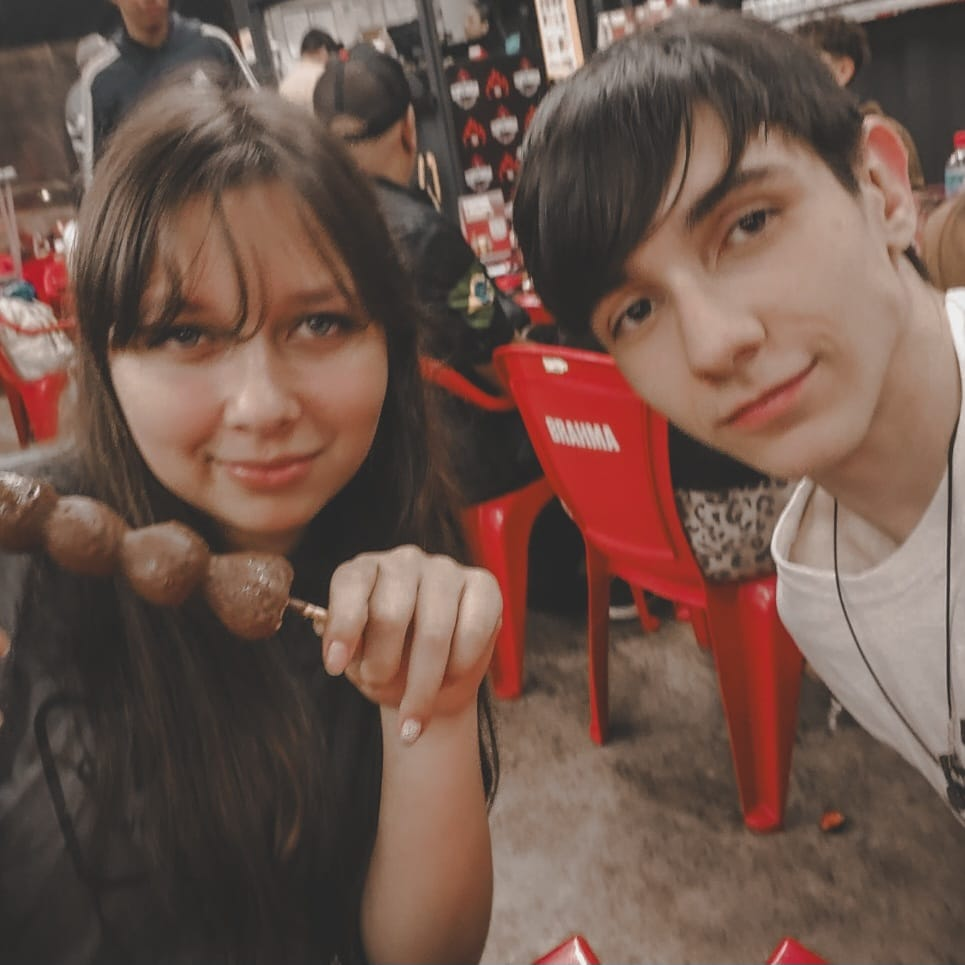
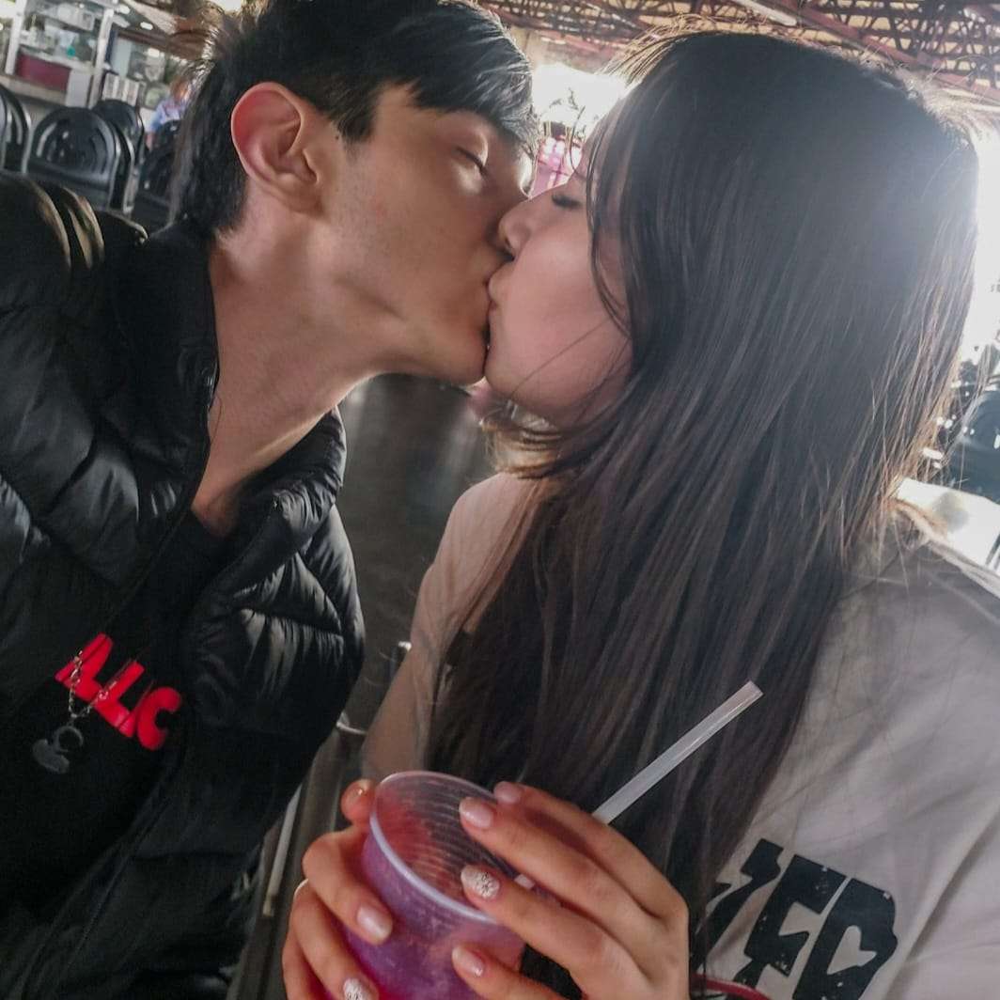
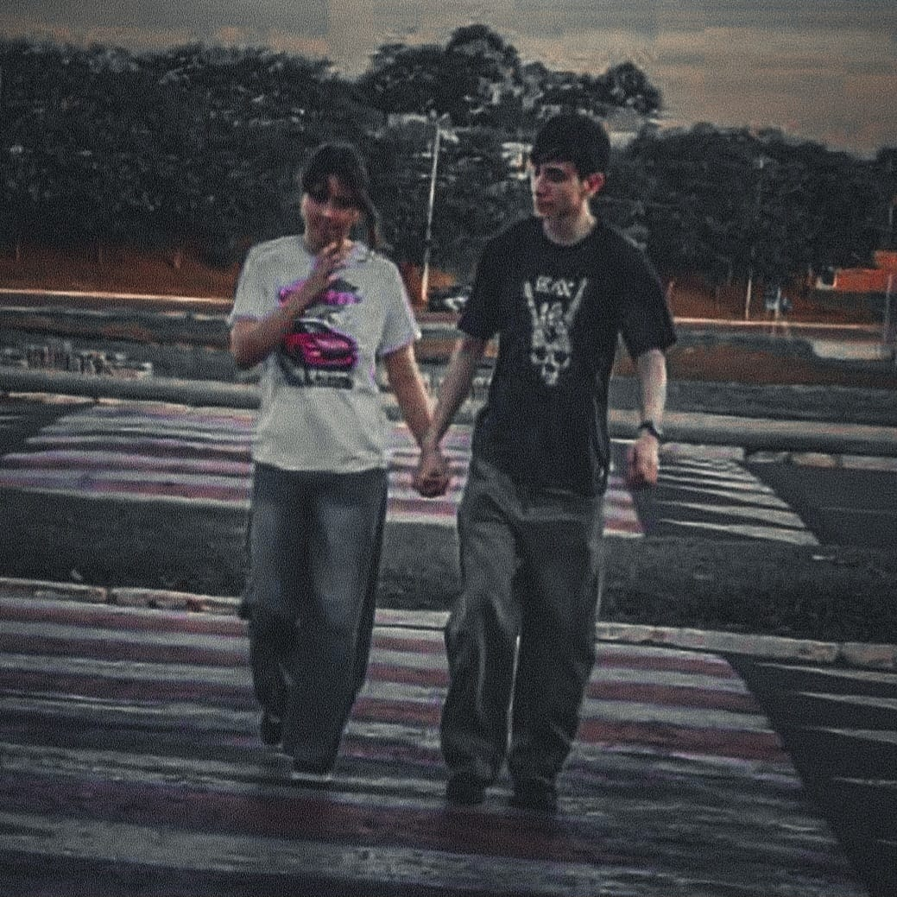
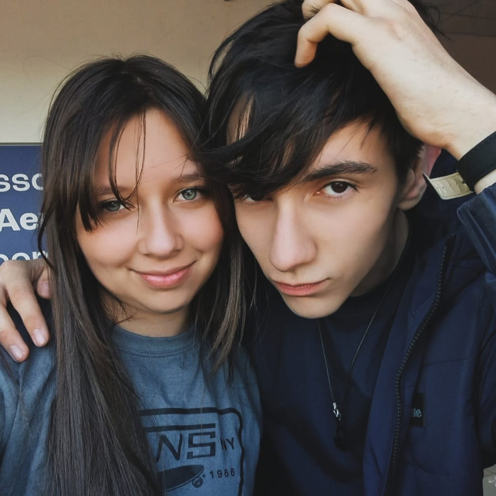
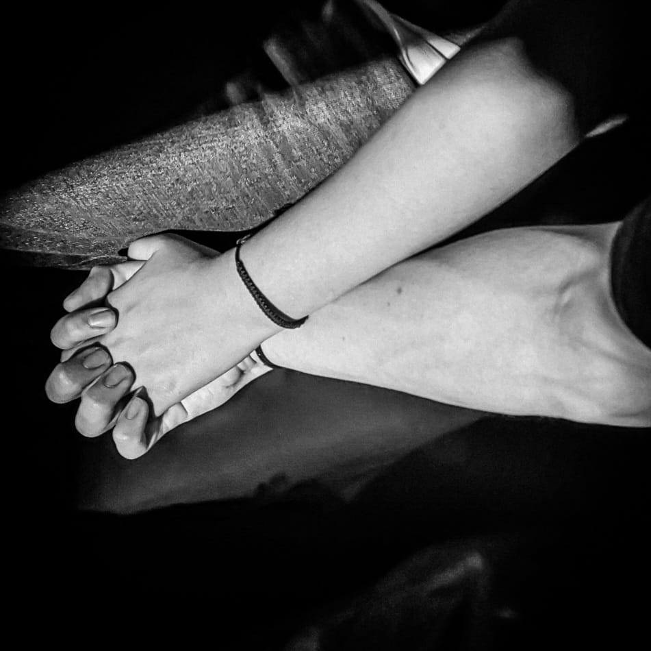

clique
        Para você, meu amor ❤️
Meu amor,
Eu fiz tudo isso porque você é a pessoa mais especial da minha vida.
Cada momento ao seu lado nesses dois anos me mostrou que amar você
é a melhor escolha que eu já fiz.
Você é meu sorriso nos dias difíceis, meu porto seguro,
minha melhor companhia e meu maior carinho.
Eu não consigo imaginar meu futuro sem você ao meu lado.
Obrigado por existir, por me amar do jeito que você ama
e por fazer da minha vida um lugar muito mais bonito.
Eu te amo mais do que palavras conseguem explicar. ❤️